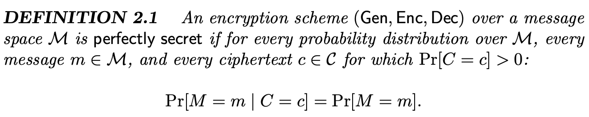
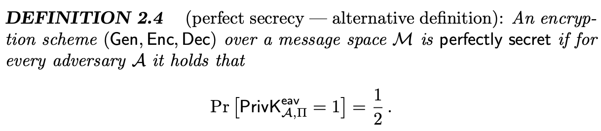
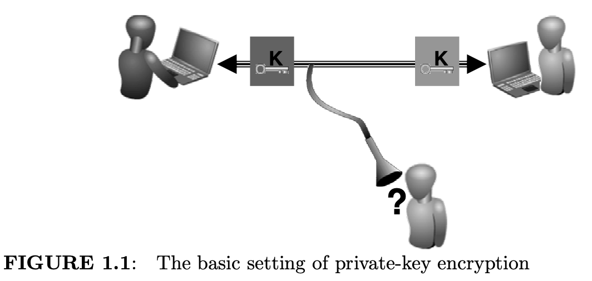

差分隐私的前世今生：前世篇
Dwork之所以能够提出DP，与她在密码学领域奠定的坚实研究基础息息相关。毕竟一项可留于史册的技术都不是拍脑袋想出来的——它们都是站在巨人的肩膀上。翻看密码学教材[1]，我们会发现很多概念与DP中的概念惊人地相似。比如，DP最初并不叫differential privacy，叫indistinguishability，即不可区分性。如果你有密码学背景，想必对这个术语并不会感到陌生。在密码学中，这个概念用来描述「perfect secrecy，绝对安全」，属于“可证明安全性（provable security）”研究范畴，本文便从这里开始讲起。
（这个系列的文章既是自己的理解和积累，也希望可以作为一个科普，可能需要一点DP背景，但也不多。如有错误，欢迎指正。）
可证明安全性概述
一个加密机制的安全性可分为三个等级[6]：「绝对安全 (perfect security)」，「计算安全 (computationally security)」以及「可证明安全 (provable security)」。
- 「绝对安全」的概念最初由Shannon提出，且符合绝对安全的加密机制目前只有「一次性密码本（One-time Pad；OTP）」；
- 「绝对安全」是指，一个攻击者（或称敌手，Adversary）在拿到由Alice发送给Bob的密文后，无法从中获得关于明文的任何信息（看了等于没看），换句话说，就是攻击者在已知密文信息的前提下破译出明文的概率（a posteriori likelihood）与直接破译明文的概率（a priori probability）没有什么不同。形式化定义为

- 「绝对安全」的加密机制要求满足柯克霍夫原则（见本文最后的Note），即
- 「绝对安全」是指，一个攻击者（或称敌手，Adversary）在拿到由Alice发送给Bob的密文后，无法从中获得关于明文的任何信息（看了等于没看），换句话说，就是攻击者在已知密文信息的前提下破译出明文的概率（a posteriori likelihood）与直接破译明文的概率（a priori probability）没有什么不同。形式化定义为
- 「计算安全」是指破译者在合理时间内无法成功破译密文。例如，某种密码的使用期限是3年，但破译者需要花费20年才能成功破译，则认为该加密机制是计算安全的；
- 「可证明安全」将证明加密机制的安全性归约（reduction）为求解某个困难问题（如利用已有信息破译一个密文）。实际证明的基本思想一般为：
- 第一，确定攻击模型，即假设攻击者永远什么样的能力，采取什么样的攻击策略，攻击步骤等；
- 第二，「挑战-应答」游戏。在这个游戏中，除了攻击者之外，还存在一个挑战者（可以想成是加密机制的设计者），两者形成了对抗关系。挑战者要做的就是遵循加密机制来响应攻击者的请求，以此证明“他”设计的加密机制是足够安全的。游戏的通用形式为：
- 攻击者“提问（调用）”挑战者；
- 挑战者“回答（响应）”攻击者；
- 攻击者向挑战者发起“攻击”：待攻击者认为收集了足够的信息后，挑战者向攻击者出示一个密文，由攻击者据此破译出明文。只要攻击者成功破译了明文中的一个字，便证明加密机制不安全。
可证明安全理论的一个典型实践就是「不可区分性游戏」。我们首先从概念上理解什么是「绝对的不可区分性」，然后利用可证明安全理论，介绍「不可区分性游戏」是如何设计的，最后指出，如果通过不可区分性实验能够证明攻击者无法利用密文获得任何关于明文的信息，则认为该加密机制是可证明安全的。
- 「绝对的不可区分：Perfect indistinguishability」
令 表示一个定义在消息域 M 上的密文的随机分布（此分布取决于密钥选择的随机性 以及加密算法的随机性 ）。
所谓「perfect indistinguishability」，是指对消息域中的任意两个m0, m1，C(m0)和C(m1)的分布是相同的——即密文中不包含有关明文的信息（因为任何情况下密文的分布都是相同的）。
- 不可区分性游戏/实验——「对抗的不可区分：Adversarial indistinguishability」
PrivKeav: 游戏的 setting 包括一个对称加密机制（private-key encryption schema Π=(Gen、Enc、Dec)）和一个攻击者（eavesdropping adversary A）。
攻击模型：攻击者A除了不知道 key 和 b，可以假设具有关于对称加密机制的所有信息，如知道随机变量 的概率分布。只有 A 无法区分一个明文的加密和另一个明文的加密时，才能证明加密机制是「绝对安全」的。
「挑战-应答」游戏：攻击者A选择两个长度相同的明文m0,m1发送给挑战者，挑战者任选其一进行加密，再将密文返回攻击者；攻击者对密文进行破译，判断这个密文的明文对应m0还是m1。
- 如果A成功破译密文（b‘=b）的概率大于1/2，则说明这个加密机制Π是不安全的，反之则说明A没有获得任何关于明文的信息。（⚠️ 注意，安全并不意味着正确率为0，而是1/2，即和完全靠运气瞎猜的概率一样）

- 改进的不可区分性游戏
上个实验是挑战者拿到攻击者发来的两个明文m0,m1后，从中任选其一进行加密。为了更严谨，还可以根据挑战者的行为将游戏过程细分为两个实验：Experiment 0和Experiment 1。其中Exp0永远选择m0进行加密；Exp1永远选择m1进行加密。此时挑战者发给攻击者的便不再是某个密文，而是Exp0 或 Exp1；同样，攻击者不知道这个Experiment的编号是多少，需要根据其返回的密文进行猜测。
由可证明安全到差分隐私
在了解上述密码学背景之后，我们大胆揣摩下Dwork提出DP的思考过程，大概是遵循这样的逻辑：现代密码学中的可证明安全理论用「不可区分性」这个概念来描述一个加密机制对于任意明文的「安全性」，那么，我们可否套用类似的思想，来评估一个「隐私机制」对数据集中任意一条记录的「隐私性」呢？于是，-indistinguishability的概念应运而生。对照着上面密码学的概念来看，其实就很容易理解了：
- perfect secrecy → perfect privacy：「绝对安全」要求攻击者根据密文，无法得知关于明文更多的信息；那「绝对隐私」呢，就是要求「攻击者」无法从隐私机制的输出结果中获知被攻击对象的记录更多的信息。
- encryption schema → statistical query / ML algorithm：在考虑「绝对安全」这个问题时，我们考虑的主体是一个加密算法；而在考虑「绝对隐私」时，主体则可以是一个统计查询函数（数据收集场景）或一个机器学习算法（机器学习场景）。（为简化描述，下文统一只使用「查询」来指代某个数据处理过程）
- Kerckhoffs’s Principles → arbitrary background knowledge: 在考虑「绝对安全」时，为了满足柯克霍夫原则，假设攻击者知晓除密钥外的所有信息（如密钥、信息、密文的随机分布）；而在考虑「绝对隐私」时，同样假设攻击者具有最大背景知识，即知道除被攻击对象的记录外，数据集其他的所有数据信息。
- probabilistic algorithm: 上文提到，加密机制中，加密算法输出的密文服从特定的随机分布，且该随机分布取决于密钥选择的随机性 以及加密算法的随机性 ；实现隐私保护同样需让隐私机制的输出结果具有一定的随机性，否则将毫无意义。
综上所述，我们便可以说，如果一个具有任意背景知识的攻击者，从一个隐私机制的输出结果中无法获知被攻击对象的记录更多的信息，便称此隐私机制具有「-不可区分性」。当攻击者具有最大背景知识时，这种针对明文发起的攻击，在密码学中也称为「差分攻击」，是故「-不可区分性」也改成了「-差分隐私」。（其实也是为了与密码学里已有的不可区分性概念加以区分，否则很容易让读者想到一起，从而让这个方法的“新颖性”大大降低）
拓展：DP自适应组合理论——k重组合定理
我们在介绍不可区分性游戏中提到，Dwork在其关于差分隐私组合理论研究工作[8]中引入了与之类似的experiment，用来分析组合机制的隐私性，称为「k重组合实验（k-fold composition experiment*）」，流程如下：
k-fold Composition: 游戏 setting 包括k个DP机制 和两个实验 Exp 0 和 Exp 1。参考 left-or-right experiment，Exp 0 / Exp 1 各自选择数据集 / 作为DP机制的输入数据。挑战者随机选择Exp 0或Exp 1发给攻击者A，然后攻击者执行以下实验步骤：
- A 选择两个相邻数据集（其中被攻击目标Bob的记录在中），传给机制
；
输出在特定数据集上的查询结果，并返回给 A；
由此经过k个机制后，攻击者便得到了 k个机制的输出结果。
k重组合下的隐私保证：直观上，我们称Bob在上述k重组合实验中能够保证隐私，当且仅当攻击者无法根据k个输出结果及其拥有的背景知识，正确推测出他进行的是哪个实验（也就是b的值）。形式化定义如右图所示。
其中，和分别表示攻击者A在不同实验中所拥有的信息——view（视图），这个信息既包括此前提到的k个机制的输出结果，还包括它具有的最大背景知识（正如「绝对安全」中假设攻击者知晓密钥、信息、密文的随机分布，这里也可以假设攻击者知道数据和算法的随机性）。
Future Work…
综上，（我觉得）差分隐私的前世便讲完了。说起差分隐私的今生，那能讲的可就多了去了，从统计分析领域到机器学习，从中心化差分到本地差分，从隐私组合到隐私放大。感觉真的画了一个好大的饼。慢慢来吧哈哈哈，不追求全覆盖，只要把看过的都理解扎实就好。
如果大家还有其他问题我没有涉及到，欢迎评论区留言，一起交流一下吧～
References:
[1] Introduction_to_Modern_Cryptography
[2] http://staff.ustc.edu.cn/~sycheng/sst/lectures/ch01_Introduction_of_Information_Security.pdf
[3] https://www.cnblogs.com/max1z/p/15992505.html#参考
[4] 贾春福，高敏芬等 [译]，《计算机安全：原理与实践》，机械工业出版社。
[5] 雷敏，杨义先，《应用密码学》，北京邮电大学出版社。
[6] 张薇，魏悦川，《密码学基础》，西安电子科技大学出版社。
[7] https://www.cnblogs.com/pam-sh/p/15244862.html
[8] C. Dwork, G. N. Rothblum, and S. Vadhan, “Boosting and differential privacy,” in FOCS, 2010, pp. 51–60.
Notes:
- 从某种意义上讲，密码学也是研究「消息变换」方法的一门学科。密码算法就是各种变换方法。将有意义的明文信息按照一组变换（编码）规则变换为密文信息的过程就称为「加密 Encryption」，这组变换规则就称为「加密算法」。授权用户使用一组变换规则将非授权者读不懂的密文变换成能看懂的明文信息的过程称为「解密 Decryption」，这组变换规则称为「解密算法」。加解密运算通常都是在一组「密钥key」控制下进行的，包括「加密密钥」、「解密密钥」、「签名密钥」、「验证密钥」等。一般来说，密钥可以是一串特定的字符串，密钥越长，生成的密文破解难度就越大 [5]。
- A scheme can be said to be computationally secure if it cannot be cracked in 'reasonable time'
- 可证明安全性是指，安全方案或协议的安全性可以被“证明”，但用“证明”一词并不十分恰当，甚至有些误导[1]。
- privacy-key encryption[1]：私钥加密，又称「对称密钥」（symmetric-key）加密、单钥加密。顾名思义，「对称」就是说加密算法和解密算法使用的密钥K是相同的（或实质上等同）。对称加密的有点是保密强度高、计算速度快；缺点在与密钥必须通过安全可靠的途径传输（如在军事中是通过人肉传输的），因此密钥管理称为影响系统安全性的关键因素。虽然这种加密过程最经典，但其弊端也大大限制了这个方法的应用场景。而之后提出的非对称加密，即加密算法和解密算法使用不同的密钥，有效地解决了这个问题。

- A private-key encryption scheme[1]：对称加密机制，也称cipher。包含以下3个算法
- key-generation algorithm Gen：依照某种特定的随机分布，输出一个 key；
- encryption algorithm Enc_k(m)：输入key和明文m，输出密文c；
- decryption algorithm Dec_k(c)：输入key和密文c，输出明文m
- Kerckhoffs’s Principles 柯克霍夫原则[1]：“密码方法本身不需要一定是秘密的，而且它必须能被敌人轻易得到。” 也就是说，我们要隐藏的是密钥key而不应是加密方案。
Kerckhoffs’ intention was that an encryption scheme should be designed so as to be secure even if an adversary knows the details of all the component algorithms of the scheme, as long as the adversary doesn’t know the key being used. “The cipher method must not be required to be secret, and it must be able to fall into the hands of the enemy without inconvenience.”
- 对称加密机制中存在3种不同的「随机性」[1]：
- 定义在密钥集合上的随机变量 ：For k ∈ K, we let Pr[K = k] denote the probability that the key output by Gen is equal to k. (Formally, K is a random variable denoting the value of the key.)
- 定义在消息集合上的随机变量 ：for m ∈ M we let Pr[M = m] denote the probability that the message that is sent is equal to m. 引入这个随机变量是考虑到消息集合中的每个m（如attack tomorrow/don't attack）可能具有不同的发送概率。如果发送某个消息不是随机事件，而是一个确定事件，不久意味着攻击者能够知道这个明文m是什么，加密过程就没有任何意义了不是么。
- 定义在密文集合上的随机变量 ：For c ∈ C, we write Pr[C = c] to denote the probability that the ciphertext is c. Note that, given Enc, the distribution over C is fixed by the distributions over K and M.
- 在密码理论领域的论文中，安全模型通常对应的是Game、Experiment、Image、Procedure等概念[3]。
- 「数据机密」和「隐私」还是存在着一定的区别[4]：后者更强调个人的主观能动性。
- 数据机密性：指确保隐私或机密信息不被非授权的个人所使用，或被泄露给非授权的个人；
- 隐私性：指确保个人能够控制或影响与自身相关的信息的收集和存储，也能够控制这些信息可以由谁披露或向谁披露。
- 补充回顾：

{kind=link}
{kind=link}
{kind=link}
{kind=link}
{kind=link}
{kind=link}
{kind=link}
{kind=link}
{kind=link}